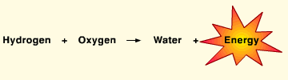

OBJECTIVE: to understand how oxygen and hydrogen react to release energy
The simple equation shown below was illustrated dramatically in the 1930s. At that time, dirigibles were the fastest means of transportation across the Atlantic Ocean. One of the most famous dirigibles was a German model, the "Hindenburg." It was filled with about 200,000 cubic meters (seven million cubic feet) of hydrogen gas. In 1937, as the Hindenburg landed in New Jersey, the hydrogen gas somehow ignited with the oxygen from the atmosphere. Below you can view actual movie footage taken on the site of the Hindenburg crash.

When you are finished, go to page